New York Canal Trip
1997

In 1997 two of us canoed a New York canal route, camping on the banks along the way.
Film-era frames cover the chart, tent sites, long tree-lined stretches, a small weir, and a path under a bridge beside the water.

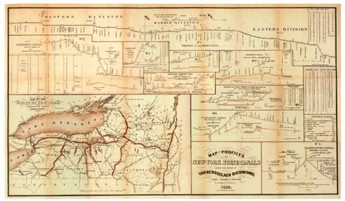

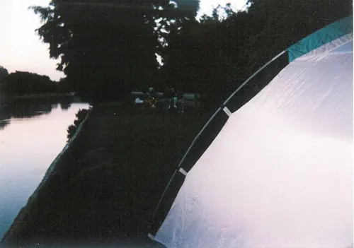

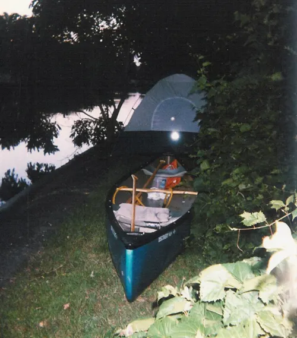

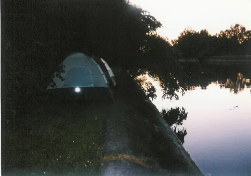


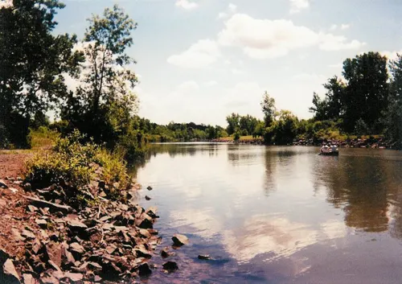

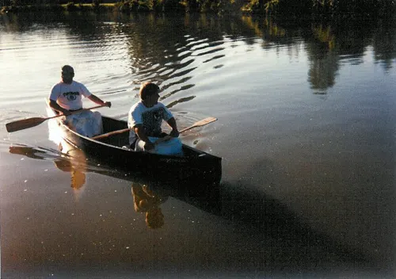

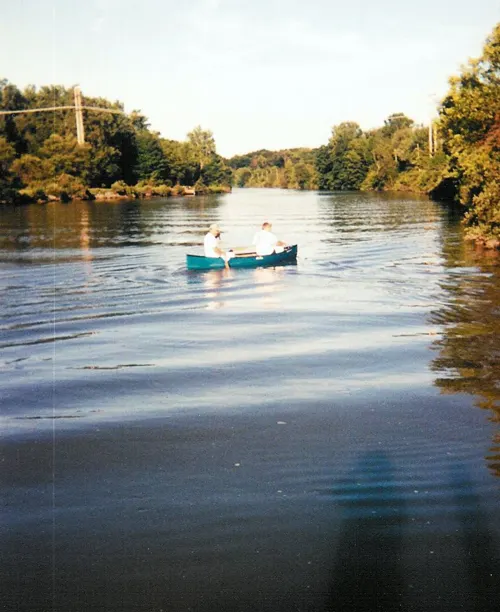

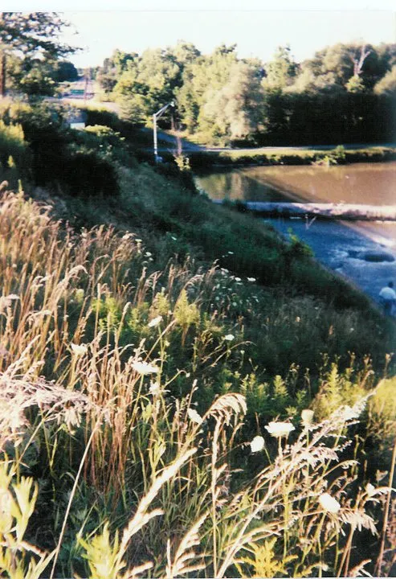

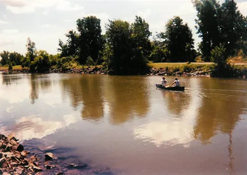

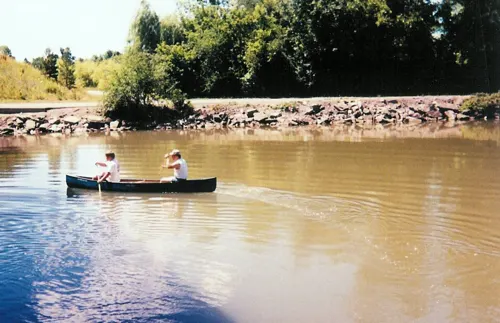

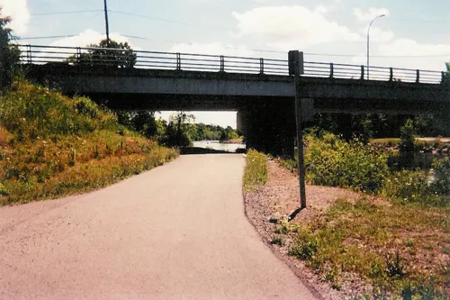